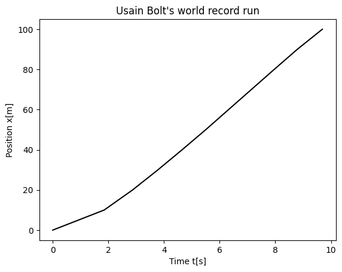
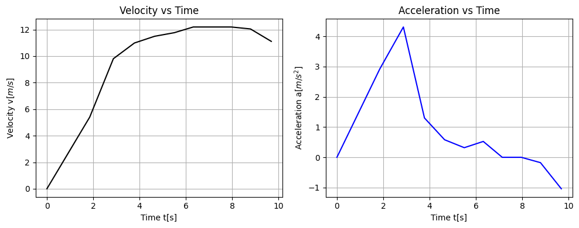

Solution Homework 1#
Spring 2025
Exercise 1 (15 pt), math reminder, properties of exponential function#
The first exercise is meant to remind ourselves about properties of the exponential function and imaginary numbers. This is highly relevant later in this course when we start analyzing oscillatory motion and some wave mechanics.
As physicists we should thus feel comfortable with expressions that include \(\exp{(i 2\pi f t)}\). Here \(t\) could be interpreted as time and \(f\) as a frequency. We know that \(i = \sqrt(-1)\) is the imaginary unit number.
1a (4pt): Perform Taylor expansions in powers of \(2\pi f t\) of the functions \(\cos{(2\pi f t)}\) and \(\sin{(2\pi f t)}\).
SOLUTION
and
1b (3pt): Perform a Taylor expansion of \(\exp{(i2\pi f t)}\).
SOLUTION
1c (2pt): Using parts (a) and (b) here, show that \(\exp{(i2\pi f t)}=\cos{(2\pi f t)}+i\sin{(2\pi f t)}\).
SOLUTION
Using \(i^2=-1\) we can rewrite the last results as
1d (2pt): Show that \(\ln{(-1)} = i \pi\).
SOLUTION
Let \(2 \pi f t = \pi\), we get
1e (4pt): Develop another novel mathematical relationship based on the properties you’ve discovered in this problem. Explain how your result connects to any of the results parts a-d.
SOLUTION
Answers can vary.
Exercise 2 (15 pt), Vector algebra#
As we have quickly realized, forces and motion in three dimensions are best described using vectors. Here we perform some elementary vector algebra that we wil need to have as tacit knowledge for the rest of the course. These operations are not typically taken with specific numbers, but rather with vectors in general. When we need to, we use the notation \(\mathbf{a}=(a_x,a_y,a_z)\) for vectors in three dimensions. To get us started the first two questions below include numerical values, but the third question expects you to use the general notation.
2a (4pt) One of the many uses of the scalar product is to find the angle between two given vectors. Find the angle between the vectors \(\mathbf{a}=(1,3,9)\) and \(\mathbf{b}=(9,3,1)\) by evaluating their scalar product.
SOLUTION
One of the many uses of the scalar product is to find the angle between two given vectors. Find the angle between the vectors \(\mathbf{a}=(1,3,9)\) and \(\mathbf{b}=(9,3,1)\) by evaluating their scalar product. The vector product is given by:
We have
since \(\mathbf{e}_i\cdot\mathbf{e}_i=1\) for our unit vectors, with \(i=1,2,3\). Note also that the unit vectors are orthogonal, that is \(\mathbf{e}_i \cdot \mathbf{e}_j=0\) if \(i\ne j\). The norm of \(\vert \mathbf{a}\vert^2 = 1+9+81=91\). The norm of \(\vert \mathbf{b}\vert^2 = 81+9+1=91\). This means we have:
leading to \(\cos{\theta_{ab}}=\frac{27}{91}\) and \(\theta_{ab}=1.2695\) rad, with \(1\) rad being equal to \(180/\pi\). Thus we have \(\theta_{ab}=72.74\) degrees.
A small digression on linear algebra useful for python programming of vectors. We define the vectors as one-dimensional arrays meaning that we write \(\mathbf{a}^T=\begin{bmatrix} 1 & 3 & 9\end{bmatrix}\) and \(\mathbf{b}^T=\begin{bmatrix} 9 & 3 & 1\end{bmatrix}\), where we use \(T\) to indicate the transpose of a vector.
We would then write the dot product as:
In Python we would code this as
# we import numpy and math functions
import numpy as np
from math import acos, sqrt, pi
# Define a
a =np.array([1,3,9])
# Define b
b =np.array([9,3,1])
# to compute the dot products we use the dot function or the multiplication sign @
norm_a = sqrt(np.dot(a,a)) # we could write it as a.T @ a or just a @ a
# We will stick with the @ operator hereafter when we multiply vector or matrices
norm_b = sqrt(b.T @ b)
dot_ab = a.T @ b
theta_ab = acos(dot_ab/(norm_a*norm_b))
# convert to degrees
print(theta_ab*180/pi)
72.7402973585292
2b (5pt) For a cube with sides of length 1, one vertex at the origin, and sides along the \(x\), \(y\), and \(z\) axes, the vector of the body diagonal from the origin can be written \(\mathbf{a}=(1, 1, 1)\) and the vector of the face diagonal in the \(xy\) plane from the origin is \(\mathbf{b}=(1,1,0)\). Find first the lengths of the body diagonal and the face diagonal. Use then part (2a) to find the angle between the body diagonal and the face diagonal. Make sure to include a sketch of your cube, the relevant vectors, and the angle you find.
SOLUTION
For a cube with sides of length 1, one vertex at the origin, and sides along the \(x\), \(y\), and \(z\) axes, the vector of the body diagonal from the origin can be written \(\mathbf{a}=(1, 1, 1)\) and the vector of the face diagonal in the \(xy\) plane from the origin is \(\mathbf{b}=(1,1,0)\). Find first the lengths of the body diagonal and the face diagonal. Use then part (2a) to find the angle between the body diagonal and the face diagonal.
The length of the body diagonal \(\vert\mathbf{b}\vert=\sqrt{3}\) and the length of the face diagonal is \(\vert \mathbf{f}\vert = \sqrt{2}\). From this we find
leading to \(\cos{\theta_{bf}}=\sqrt{2}/\sqrt{3}\) and \(\theta_{bf}=0.615\) rad or \(\theta_{bf}=35.3\) degrees.
2c (6pt) Consider two arbitrary vectors in three dimensions, \(\mathbf{a}=(a_x, a_y, a_z)\) and \(\mathbf{b}=(b_x, b_y, b_z)\). Prove that the cross product \(\mathbf{a} \times \mathbf{b}\) results in a vector that is perpendicular to both \(\mathbf{a}\) and \(\mathbf{b}\). Use the properties of the dot product and the cross product to support your proof. Include a diagram illustrating the vectors and their cross product.
SOLUTION
The cross product of two vectors \(\mathbf{a}\) and \(\mathbf{b}\) is defined as:
where \(\mathbf{i}\), \(\mathbf{j}\), and \(\mathbf{k}\) are the unit vectors in the x, y, and z directions, respectively.
Using the determinant formula for the cross product, we have:
Let \(\mathbf{c} = \mathbf{a} \times \mathbf{b}\), so \(\mathbf{c} = (c_x, c_y, c_z)\), where:
To prove that \(\mathbf{c}\) is perpendicular to \(\mathbf{a}\) and \(\mathbf{b}\), we need to show that their dot products are zero:
Substitute the components of \(\mathbf{c}\):
Expanding and simplifying, we find that all terms cancel out:
The proof is identical for \(\mathbf{b} \cdot \mathbf{c}\).
Exercise 3 (10 pt), More vector mathematics#
3a (5pt) Show (using the fact that multiplication of reals is distributive) that \(\mathbf{a}(\mathbf{b}+\mathbf{c})=\mathbf{a}\mathbf{b}+\mathbf{a}\mathbf{c}\).
SOLUTION
Writing out the equations and keeping in mind that the norm of unit vectors is one, we have
3b (5pt) Show that (using product rule for differentiating reals) \(\frac{d}{dt}(\mathbf{a}\mathbf{b})=\mathbf{a}\frac{d\mathbf{b}}{dt}+\mathbf{b}\frac{d\mathbf{a}}{dt}\).
SOLUTION
Exercise 4 (10 pt), Algebra of cross products#
4a (5pt) Show that the cross products are distributive \(\mathbf{a}\times(\mathbf{b}+\mathbf{c})=\mathbf{a}\times\mathbf{b}+\mathbf{a}\times\mathbf{c}\).
SOLUTION
To prove the distributive property of the cross product for vectors in three-dimensional space, we need to show that for any vectors \(\mathbf{a}\), \(\mathbf{b}\), and \(\mathbf{c}\), the following holds:
Let’s denote \(\mathbf{a} = (a_x, a_y, a_z)\), \(\mathbf{b} = (b_x, b_y, b_z)\), and \(\mathbf{c} = (c_x, c_y, c_z)\).
The vector sum \(\mathbf{b}+\mathbf{c}\) is given by:
Now, we compute the cross product of \(\mathbf{a}\) with this sum:
which yields:
Expanding this, we get:
Next, we compute the cross products \(\mathbf{a}\times\mathbf{b}\) and \(\mathbf{a}\times\mathbf{c}\) separately:
and
Now, we add the two cross products:
Simplifying, we get:
Comparing the expanded form of \(\mathbf{a}\times(\mathbf{b}+\mathbf{c})\) with the sum \((\mathbf{a}\times\mathbf{b}) + (\mathbf{a}\times\mathbf{c})\), we can see that they are identical:
4b (5pt) Show that \(\frac{d}{dt}(\mathbf{a}\times\mathbf{b})=\mathbf{a}\times\frac{d\mathbf{b}}{dt}+\mathbf{b}\times\frac{d\mathbf{a}}{dt}\). Be careful with the order of factors.
SOLUTION
To show that the time derivative of the cross product of two vectors \(\mathbf{a}\) and \(\mathbf{b}\) equals the cross product of the first vector and the time derivative of the second vector plus the time derivative of the first vector cross the second vector, we can use the properties of derivatives and the cross product.
Given two time-dependent vectors \(\mathbf{a}(t) = (a_x(t), a_y(t), a_z(t))\) and \(\mathbf{b}(t) = (b_x(t), b_y(t), b_z(t))\), we want to prove that:
The cross product \(\mathbf{a}(t) \times \mathbf{b}(t)\) is given by:
Now, take the time derivative of the cross product component-wise:
Applying the product rule to each component, we get:
x-component
y-component
z-component
Now, we rearrange the terms to separate the contributions from \(\mathbf{a}(t)\) and the derivatives of \(\mathbf{b}(t)\), and vice versa:
x-component
y-component
z-component
The first set of terms corresponds to \(\mathbf{a}(t)\) crossed with the time derivative of \(\mathbf{b}(t)\), and the second set of terms corresponds to the time derivative of \(\mathbf{a}(t)\) crossed with \(\mathbf{b}(t)\):
Combining these two cross products, we obtain the original expression:
This proves the required relationship and demonstrates that the time derivative of a cross product can be distributed across the cross product operation while maintaining the order of factors, which is crucial because the cross product is not commutative.
Exercise 5 (10 pt), Area of triangle and law of sines#
The three vectors \(\mathbf{a}\), \(\mathbf{b}\), and \(\mathbf{c}\) are the three sides of a triangle ABC. The angles \(\alpha\), \(\beta\), and \(\gamma\) are the angles opposite the sides \(\mathbf{a}\), \(\mathbf{b}\), and \(\mathbf{c}\), respectively. as shown below.

(Figure: A triangle with sides \(\mathbf{a}\), \(\mathbf{b}\), and \(\mathbf{c}\) and angles \(\alpha\), \(\beta\), and \(\gamma\); reproduced from JRT.)
5a (5pt) Show that the area of the triangle can be given by any of these three equivalent expressions: \(A=\frac{1}{2}|\mathbf{a}\times\mathbf{b}|=\frac{1}{2}|\mathbf{b}\times\mathbf{c}|=\frac{1}{2}|\mathbf{c}\times\mathbf{a}|\).
SOLUTION
If we place the vertex \(A\) at the origin and side \(b\) along the \(x\)-axis, then the magnitude of the cross product \(\mathbf{b}\times \mathbf{c}\) gives,
which is nothing but the magnitude of the base multiplied with the magnitude of the height. We recognize that \(c_y\) is the height of the vertex \(B\) above the \(x\)-axis. From this we get that the area is,
which we were supposed to show.
5b (5pt) 5b (5pt) Use the equality of the three expressions for the area of the triangle to show that \(\frac{\sin{\alpha}}{a}=\frac{\sin{\beta}}{b}=\frac{\sin{\gamma}}{c}\), which is known as the Law of Sines.
SOLUTION
From part 5a, using the formula for the magnitude of the cross product we have,
which leads to,
Exercise 6 (40pt), Numerical elements, getting started with some simple data#
Our first numerical attempt will involve reading data from file or just setting up two vectors, one for position and one for time. Our data are from Usain Bolt’s world record 100m during the olympic games in Beijing in 2008. The data show the time used in units of 10m (see below). Before we however venture into this, we need to repeat some basic Python syntax with an emphasis on
basic Python syntax for arrays
define and operate on vectors and matrices in Python
create plots for motion in 1D space
For more information, see the introductory slides. Here are some of the basic packages we will be using this week
import numpy as np
import matplotlib.pyplot as plt
%matplotlib inline
The first exercise here deals with simply getting familiar with vectors and matrices.
We will be working with vectors and matrices to get you familiar with them
Initalize two three-dimensional \(xyz\) vectors in the below cell using np.array([x,y,z]). Vectors are represented through arrays in python
V1 should have x1=1, y1 =2, and z1=3.
Vector 2 should have x2=4, y2=5, and z2=6.
Print both vectors to make sure your code is working properly.
V1 = np.array([1,2,3])
V2 = np.array([4,5,6])
print("V1: ", V1)
print("V2: ", V2)
V1: [1 2 3]
V2: [4 5 6]
If this is not too familiar, here’s a useful link for creating vectors in python https://docs.scipy.org/doc/numpy-1.13.0/user/basics.creation.html. Alternatively, look up the introductory slides.
Now lets do some basic mathematics with vectors.
Compute and print the following, and double check with hand calculations:
6a (2pt) Calculate \(\mathbf{V}_1-\mathbf{V}_2\).
6b (2pt) Calculate \(\mathbf{V}_2-\mathbf{V}_1\).
6c (2pt) Calculate the dot product \(\mathbf{V}_1\mathbf{V}_2\).
6d (2pt) Calculate the cross product \(\mathbf{V}_1\times\mathbf{V}_2\).
Here is some useful explanation on numpy array operations if you feel a bit confused by what is happening, see https://www.pluralsight.com/guides/overview-basic-numpy-operations
6a-6d, solutions#
The following code prints the first two exercises
print(V1-V2)
print(V2-V1)
[-3 -3 -3]
[3 3 3]
For the dot product of V1 and V2 below we can use the dot function of numpy as follows
print(V1.dot(V2))
32
Alternatively, and this is the way it is normally written in Python now, we have
print(V1 @ V2)
32
A personal remark: I am not too fond of this notation!
As a small challenge try to write your own function for the dot product of two vectors.
Matrices can be created in a similar fashion in python. In this language we can work with them through the package numpy (which we have already imported)
M1 = np.matrix([[1,2,3],
[4,5,6],
[7,8,9]])
M2 = np.matrix([[1,2],
[3,4],
[5,6]])
M3 = np.matrix([[9,8,7],
[4,5,6],
[7,6,9]])
Matrices can be added in the same way vectors are added in python as shown here
print("M1+M3: ", M1+M3)
M1+M3: [[10 10 10]
[ 8 10 12]
[14 14 18]]
What happens if we try to do \(M1+M2\)?
That’s enough vectors and matrices for now. Let’s move on to some physics problems! Yes, the actual subject we are studying for.
We can opt for two different ways of handling the data. The data is listed in the table here and represents the total time Usain Bolt used in steps of 10 meters of distance. The label \(i\) is just a counter and we start from zero since Python arrays are by default set from zero. The variable \(t\) is time in seconds and \(x\) is the position in meters.
| i | 0 | 1 | 2 | 3 | 4 | 5 | 6 | 7 | 8 | 9 |
|---|---|---|---|---|---|---|---|---|---|---|
| x[m] | 10 | 20 | 30 | 40 | 50 | 60 | 70 | 80 | 90 | 100 |
| t[s] | 1.85 | 2.87 | 3.78 | 4.65 | 5.50 | 6.32 | 7.14 | 7.96 | 8.79 | 9.69 |
6e-6f (6pt)+(6pt), solution#
You can here make a file with the above data and read them in and set up two vectors, one for time and one for position. Alternatively, you can just set up these two vectors directly and define two vectors in your Python code. Note we add by hand the initial conditions with position and time set to zero!
The following example code may help here. It plots the solution as well.
# we just initialize time and position
x = np.array([0.0, 10.0, 20.0, 30.0, 40.0, 50.0, 60.0, 70.0, 80.0, 90.0, 100.0])
t = np.array([0.0,1.85, 2.87, 3.78, 4.65, 5.50, 6.32, 7.14, 7.96, 8.79, 9.69])
plt.plot(t,x, color='black')
plt.xlabel("Time t[s]")
plt.ylabel("Position x[m]")
plt.title("Usain Bolt's world record run")
plt.show()

6g (10pt), solution#
Compute thereafter the mean velocity for every interval \(i\) and the total velocity (from \(i=0\) to the given interval \(i\)) for each interval and plot these two quantities as function of time. Comment your results.
# Now we can compute the mean velocity using our data
# We define first an array Vaverage
n = np.size(t)
Vaverage = np.zeros(n)
TotalVaverage = np.zeros(n)
for i in range(1,n):
Vaverage[i] = (x[i]-x[i-1])/(t[i]-t[i-1])
TotalVaverage[i] = (x[i]-x[0])/(t[i]-t[0])
6h (10pt), solution#
Finally, compute and print and plot the mean velocities, total average velocity, acceleration for each interval and the total acceleration.
# Now we can compute the mean acceleration using our data
# inport pandas first
import pandas as pd
# We define first an array Aaverage
n = np.size(t)
Aaverage = np.zeros(n)
Aaverage[0] = 0
TotalAaverage = np.zeros(n)
for i in range(1,n):
Aaverage[i] = (Vaverage[i]-Vaverage[i-1])/(t[i]-t[i-1])
TotalAaverage[i] = (Vaverage[i]-Vaverage[0])/(t[i]-t[0])
data = {'t[s]': t,
'x[m]': x,
'v[m/s]': Vaverage,
'Totvaver[m/s]': TotalVaverage,
'a[m/s^2]': Aaverage,
'TotAaver[m/s]': TotalAaverage
}
NewData = pd.DataFrame(data)
display(NewData[0:n])
| t[s] | x[m] | v[m/s] | Totvaver[m/s] | a[m/s^2] | TotAaver[m/s] | |
|---|---|---|---|---|---|---|
| 0 | 0.00 | 0.0 | 0.000000 | 0.000000 | 0.000000e+00 | 0.000000 |
| 1 | 1.85 | 10.0 | 5.405405 | 5.405405 | 2.921841e+00 | 2.921841 |
| 2 | 2.87 | 20.0 | 9.803922 | 6.968641 | 4.312271e+00 | 3.416001 |
| 3 | 3.78 | 30.0 | 10.989011 | 7.936508 | 1.302296e+00 | 2.907146 |
| 4 | 4.65 | 40.0 | 11.494253 | 8.602151 | 5.807378e-01 | 2.471882 |
| 5 | 5.50 | 50.0 | 11.764706 | 9.090909 | 3.181800e-01 | 2.139037 |
| 6 | 6.32 | 60.0 | 12.195122 | 9.493671 | 5.248976e-01 | 1.929608 |
| 7 | 7.14 | 70.0 | 12.195122 | 9.803922 | 1.516402e-14 | 1.708000 |
| 8 | 7.96 | 80.0 | 12.195122 | 10.050251 | -1.516402e-14 | 1.532050 |
| 9 | 8.79 | 90.0 | 12.048193 | 10.238908 | -1.770231e-01 | 1.370670 |
| 10 | 9.69 | 100.0 | 11.111111 | 10.319917 | -1.041202e+00 | 1.146657 |
We see clearly from this table that the average velocity increases till approximately 60m. Then it is constant for another 20 meters before it starts to decrease. The average acceleration increases till he has reached the first 20 meters, then it starts decreasing. After 80 meters we see clearly that he starts to slow down since the acceleration becomes negative.
After 100 \(m\) we note also that the total average velocity is approximately 10.32 \(m/s\) and the total average acceleration is decreasing from its peak around 20 \(m\).
We can also graph the estimates of his instantaneous velocity and acceleration (average between intervals) as functions of time.
fig, (ax1, ax2) = plt.subplots(1, 2, figsize=(10, 4))
# Plot the velocity as function of time
ax1.plot(t, Vaverage, color='black')
ax1.set_xlabel("Time t[s]")
ax1.set_ylabel("Velocity v[$m/s$]")
ax1.set_title("Velocity vs Time")
ax1.grid()
# Plot the acceleration as function of time
ax2.plot(t, Aaverage, color='blue')
ax2.set_xlabel("Time t[s]")
ax2.set_ylabel("Acceleration a[$m/s^2$]")
ax2.set_title("Acceleration vs Time")
ax2.grid()
plt.tight_layout()
plt.show()

The interesting question is how quickly Usain Bolt could have run if he had not slowed down during the last 20 meters. Can you find this based on the present analysis, that is the above table? Assume he kept a constant velocity like the one he had from 60m to 80m. How fast could he have run if he had kept the same velocity till he reached 100m?